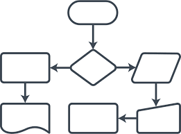
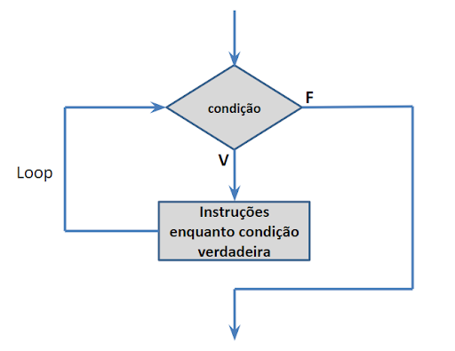

Fluxograma: é um tipo de diagrama, e pode ser entendido como uma representação esquemática de um processo ou algoritmo, muitas vezes feito através de gráficos que ilustram de forma descomplicada a transição de informações entre os elementos que o compõem, ou seja, é a sequência operacional do desenvolvimento de um processo, o qual caracteriza: o trabalho que está sendo realizado, o tempo necessário para sua realização, a distância percorrida pelos documentos, quem está realizando o trabalho e como ele flui entre os participantes deste processo.
 Linguagems de ProgramçãoA linguagem de programação é um método padronizado, formado por um conjunto de regras sintáticas e semânticas, de implementação de um código fonte - que pode ser compilado e transformado em um programa de computador,[1] ou usado como script interpretado - que informará instruções de processamento ao computador.Permite que um programador especifique precisamente quais os dados que o computador irá atuar, como estes dados serão armazenados ou transmitidos e, quais ações devem ser tomadas de acordo com as circunstâncias. Linguagens de programação podem ser usadas para expressar algoritmos com precisão
Estruturas CondicionaisA Estrutura Condicional Simples executa um comando ou vários comandos se a condição for verdadeira. Se a condição for falsa, a estrutura é finalizada sem executar os comandos. O comando que define a estrutura é representado pela palavra SE.
A Estrutura Condicional Composta segue o mesmo princípio da Estrutura Condicional Simples, com a diferença de que quando a condição não é satisfeita, será executado o outro comando. O comando que define a estrutura é representado pelas palavras SE e SE NÃO.
LoopsLoop, na programação estruturada, são usados vários recursos para executar determinadas ações até que a condição seja satisfatória. Um outro tipo de estrutura usada é o que chamamos de rótulo para alguns programadores conhecidos como loop. Lembrando que loop em tecnologia da informação também é conhecido como um laço.
